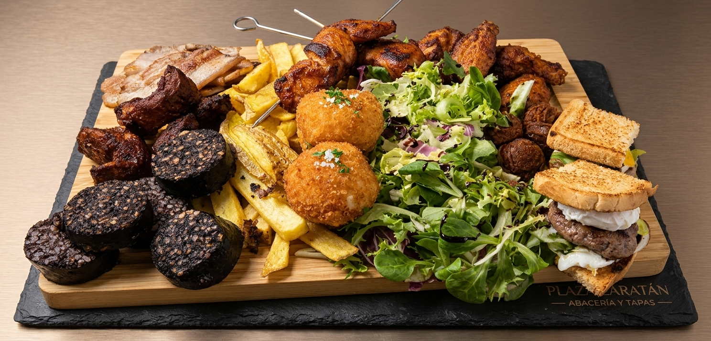
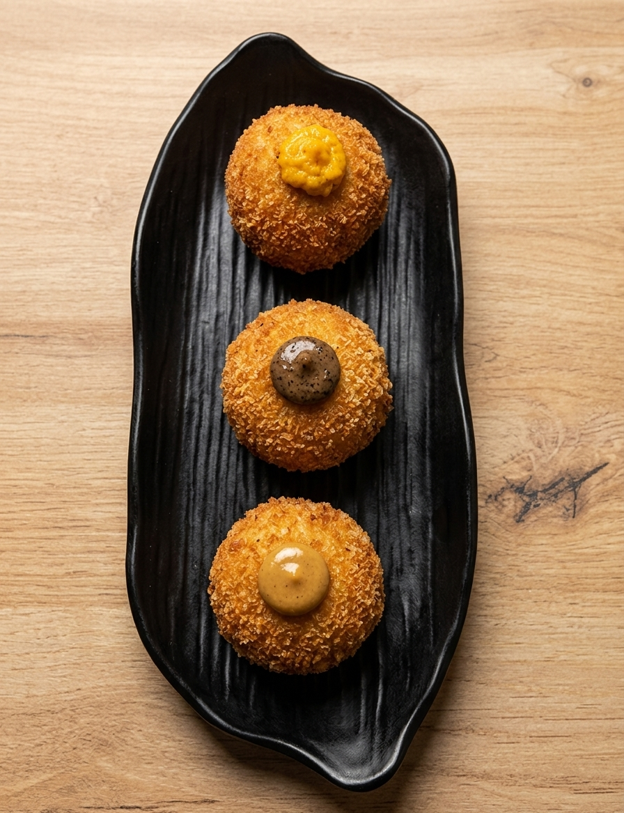
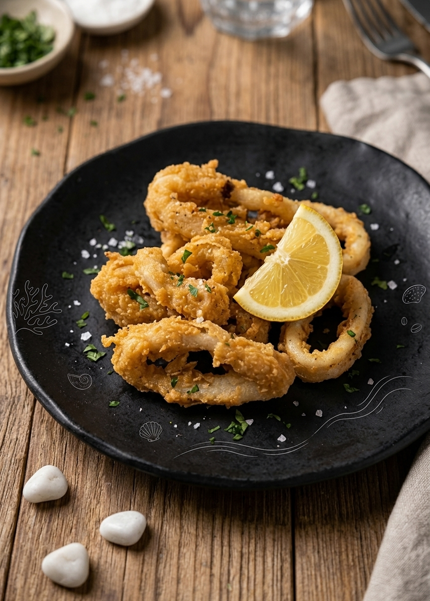
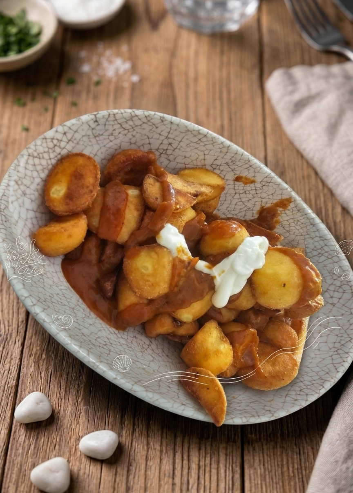
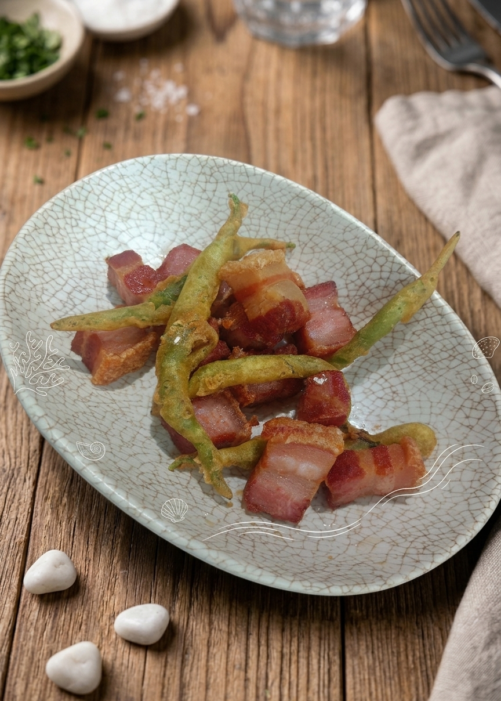

Zaratán · Valladolid
Buenos momentos
alrededor de la mesa.
Desayunos, tapas, raciones y propuestas para disfrutar a tu ritmo en el corazón de Zaratán.
Plaza Mayor, 12 · Zaratán

Imagen recibida · confirmar que representa al establecimiento
Imagen recibida · confirmar que representa al establecimientoEn torno a la mesa
Un lugar para
disfrutar sin prisas.
Hay días que empiezan con un buen desayuno y otros que piden alargar la charla con algo rico en el centro de la mesa.
En La Plaza encontrarás una propuesta de desayunos, tapas, raciones y comidas informales. Consulta por teléfono la disponibilidad de los platos.
Explora nuestras categoríasPara cada momento
Algo para disfrutar.
Desayunos y raciones de la carta compartida. Las fotografías recibidas están pendientes de confirmar como imágenes reales del establecimiento.
Un adelanto
La mesa reúne
los mejores planes.
Fotografías de muestra para esta propuesta web. Se sustituirán por imágenes autorizadas del establecimiento.



La experiencia
Lo que cuentan
quienes nos visitan.
Una referencia a las opiniones públicas y un enlace para leerlas directamente en Google Maps.
En las opiniones públicas consultadas se mencionan el trato, las raciones y las croquetas.
- El trato
- Las raciones
- Las croquetas
Datos reproducidos por directorios públicos. La valoración y el número de reseñas pueden cambiar. Consulta: 2 de noviembre de 2026.
Ver opiniones en Google MapsNos vemos en Zaratán
Tu próximo plan
empieza aquí.
Estamos en Plaza Mayor. Llámanos para consultar disponibilidad o ven a visitarnos.